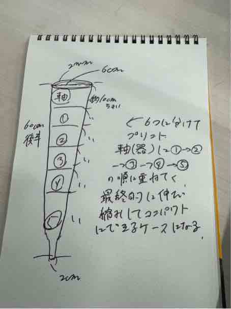
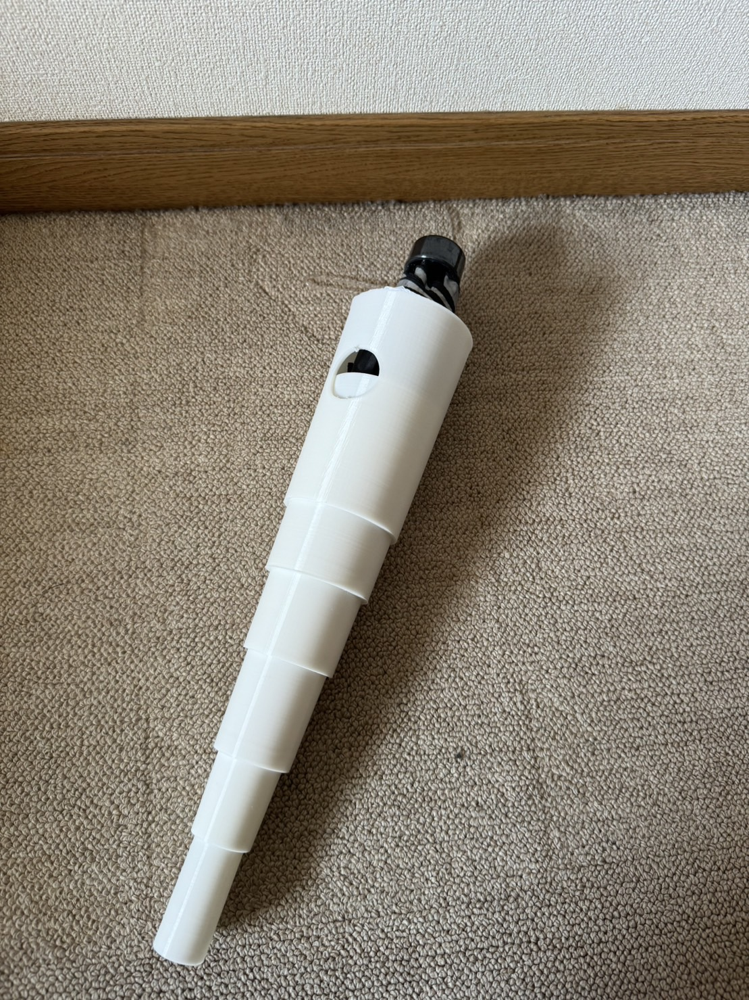
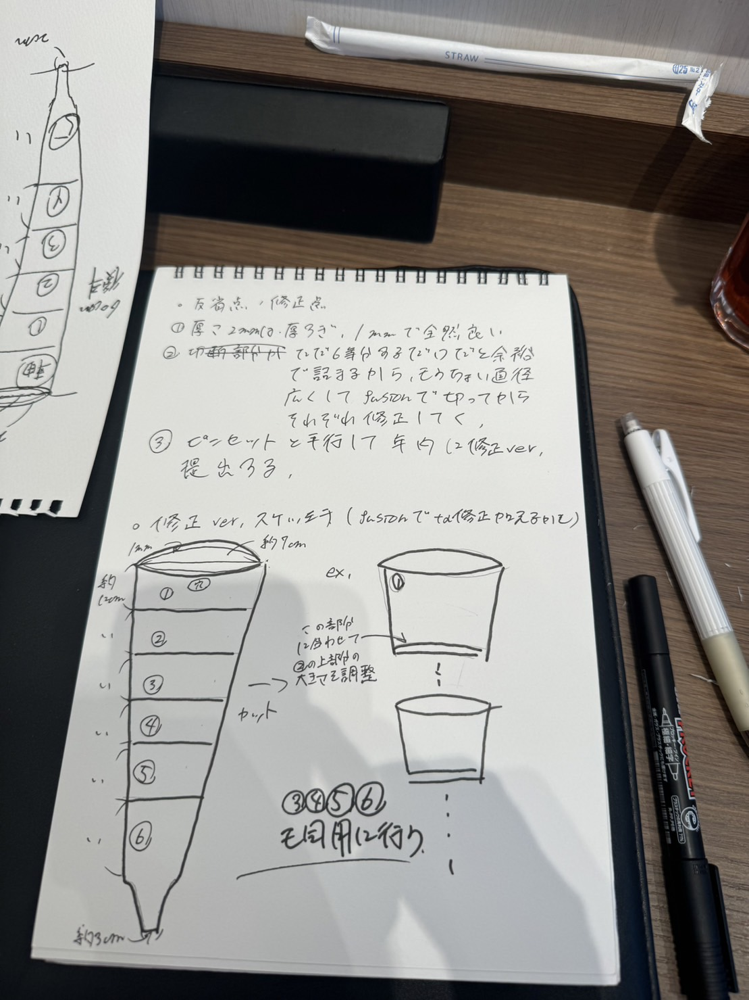

折り畳み式傘ケース
背景
povを通してでた観察の中に「電車内の傘の置き忘れ」が挙げられたたときに、無くさないようにリュック等に取り付けられるこのアイデア浮かんだ。
ディズニーランドのポップコーンの段になってる折り畳み式バケットを参考にした。
アイデア構想

作品
画像添付 
良かった点・反省点
初めて3Dプリンタを利用して課題を作成できたので達成感とfusionからcuraまでの手順を得ることが出来た。 修正点はスケッチブックに書き留めておいた 